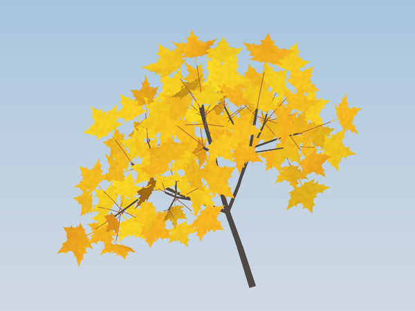
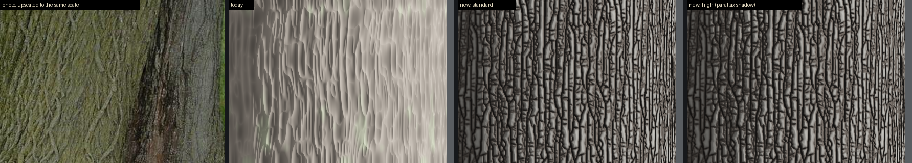
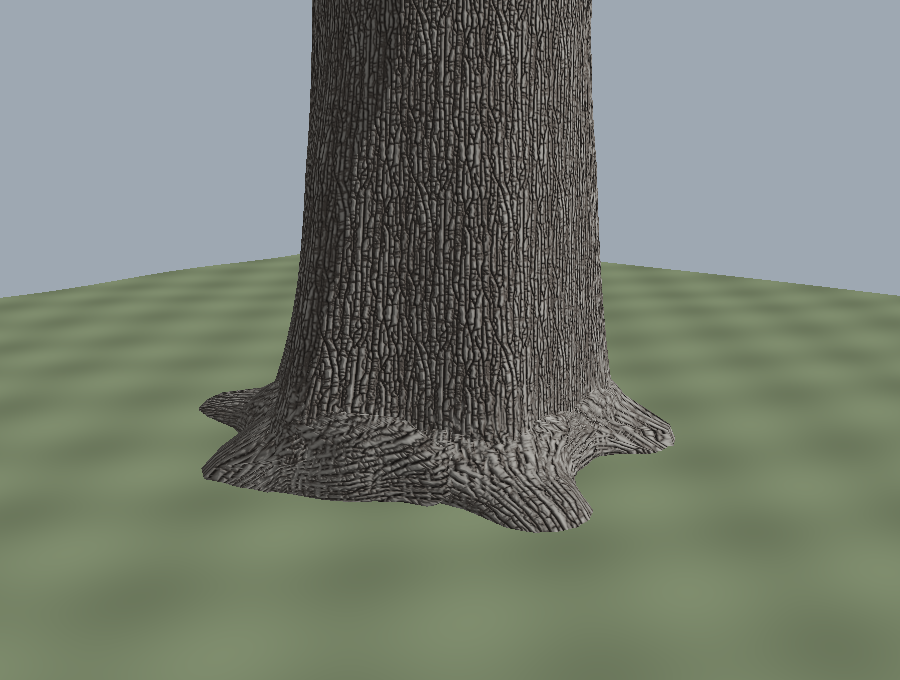

Task 117: the maple, round one, and what to choose
Three CPU studies, each with its own page. This page gives my reading of their pictures and gathers their questions. Nothing in src/ has changed yet.
Branches: four growth methods, each with gravity off and on, beside the photos
Leaves: which leaves sag (the measurements), plates at the shoot tips, bent leaf meshes per tier
Bark, junctions, roots: bark that cracks as it grows, collars, the flare and surface roots (shown on today's skeleton)
Branches
Our generator with broken leaders: gravity off and onPalubicki 2009, one limb: gravity off and on
None of the four matches the photos yet.
Whole tree: our generator with gravity is closest. Its limbs arch outward and their branches turn up. But the wood is still too even, and the elbows hardly show at this size.
One limb: Palubicki with gravity is closest. It is crooked, with stubs and shoots turning up, like the zig-zag photo. Without gravity it grows like a conifer.
Gao and Newberry (the task's chosen path) grows a round bush. Space colonisation grows a smooth vase that gravity hardly changes.
No method grows the hanging twig fans.
Gravity changes the most: it takes our generator and Palubicki from upright to spreading. My recommendation is the subagent's: our generator's frame + broken leaders + the gravity layer (in place of Habit.sag), with Palubicki's shedding of shaded wood for stubs and bare inner limbs, and a rule of its own for the hanging fans. That replaces the task's Gao and Newberry forks, so it needs your yes.
Leaves

Proposed: leaves only at the tips, in plates, seen from belowToday's rule on the same branch
Measured on Norway maple in Estonia (Raabe et al. 2015): most blades are near level. In summer the top of the crown is flattest (median 15° from level), the middle and bottom steeper (22–23°).
Sag at the crown's edges is not supported for summer. If anything, more sag inside and low down, where the shade leaves are larger and thinner, but that is only weakly supported.
Autumn: the blades tilt more as they age, the top first (median 22° in September, 42° in an October sample).
Curvature (cupping, edges, lobes) by position has never been measured on Norway maple. In beech, sun leaves are folded more than shade leaves.
Plates (Weisse 1895, measured on Norway maple): the lower leaf of a pair is larger and has the longer stalk. Leaves placed this way overlap 10 % from above; today's rule overlaps 74 %.
Drawing: six bent leaf shapes made at startup; flat cards on phones (4 vertices a leaf), 10 on the tablet, 21 on the high tier.
Bark, junctions, roots

Close: photo, today's tile, new (standard), new (high)

The flare and roots on today's trunk
The relief is now strong, as you asked: deep dark furrows from the normal, cavity and shadow maps, with no displacement of the mesh.
My view: the new tile is too busy and too regular next to the photo. The ridges there are wider and interlaced, with fewer cracks. The cracks look about twice too dense, and almost all of them are vertical.
The flare shows a seam where the trunk's grain meets the roots' grain, and the roots read as a skirt more than as roots diving into the lawn. This round's demo was on today's skeleton anyway; it gets redone on the chosen one.
Cost estimates: about +35k triangles on the high tier, +7k standard, +0.5k phone; growth about +10 ms; the tile 25–35 ms once at startup.
Questions for you
Answer the starred ones first: they decide the skeleton, which everything else waits on.
Branches
★ Method: our generator + broken leaders + gravity + Palubicki's shedding, in place of Gao and Newberry's forks? (recommended)
★ One leader to the top, or codominant stems as in the photo of the whole tree?
★ How crooked: a few clear elbows a limb (1–3, as the task says), or more zig-zag throughout?
The hanging limb: grown and bent down by gravity, or kept placed by hand?
How much sag: as on the gravity-on pictures, more, or less?
Palubicki's full shadow grid as a later high-tier option?
Leaves
★ Is the maple always autumn, or does it follow the season's colours? The tilt and sag rules depend on it.
Replace the task's "blades within about 15° of level" with tilts drawn from the measured spread, by height and season? (recommended)
More sag inside the crown and low down, though nothing measures it on Norway maple?
Is the tablet's bent leaf mesh worth its cost, given the tablet's 27–32 ms a frame now?
Keep the step that nudges blades apart (10 % overlap), or Weisse's ratios alone (44 %)?
Bark and roots
Which old bark to match: the park maples' photos or the lawn tree's?
Moss and lichen now, or later?
How much of the roots should show above the lawn?
The bark's age by the wood's radius, or by the skeleton's age? (radius: simpler; recommended)
Roots on all tiers while the window pier hides the base, or only the high tier?
Leave parallax out until a close view comes? (recommended)